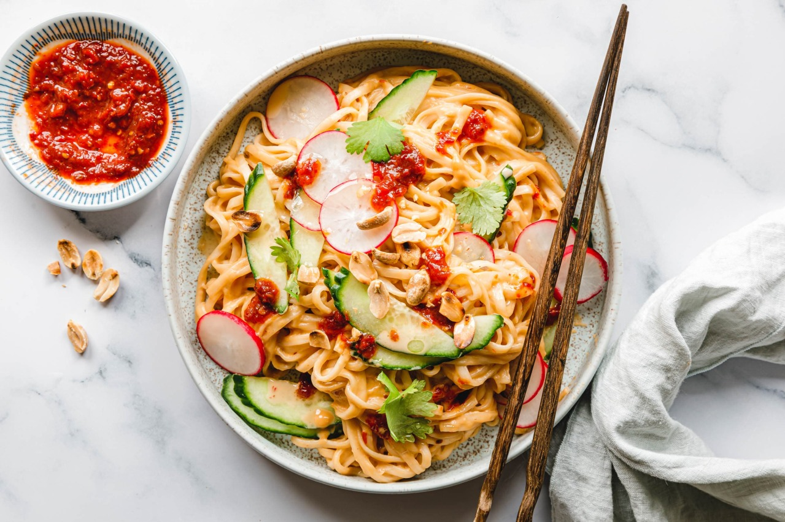

Schnelle Erdnussbutter-Nudeln mit Sambal

Unsere schnellen Erdnussbutter-Nudeln mit Sambal Oelek stehen in fünfzehn
Minuten auf dem Tisch, lassen sich aus Vorratschrank-Staples zubereiten und
sind dabei das ultimative Comfort Food, das du dir wünscht!
Zutaten
Für die Sauce
- 2 Zehen Knoblauch
- 80 g Erdnussmus
- 3 EL Sojasauce
- 1 EL Reisessig
- 1 TL Samal Oelek
- 80 ml heißes Wasser
Außerdem
- 100 g Gurke
- 70 g Radieschen
- 10 g Koriander
- 2 EL geröstete Erdnüsse
- 200 g Nudeln
- Sambal Olek
- Für die Sauce Knoblauch reiben und zusammen mit den restlichen Zutaten
cremig rühren.
- Gurke und Radieschen in Scheiben schneiden, Koriander zupfen.
- Nudeln nach Packungsanweisung kochen, aber 1–2 Minuten früher als auf
der Packung angegeben abgießen. Dabei etwa 100–200 ml Nudelwasser auffangen.
- Nudeln sofort mit Erdnussbuttersauce und Gurke, Radieschen vermengen. Dabei
nach und nach soviel Nudelwasser unterrühren, bis die Nudeln gleichmäßig cremig
sind.
- Mit Koriander, gerösteten Erdnüssen und Sambal servieren.